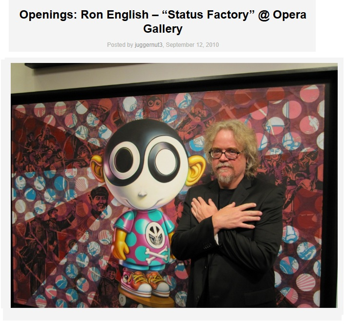
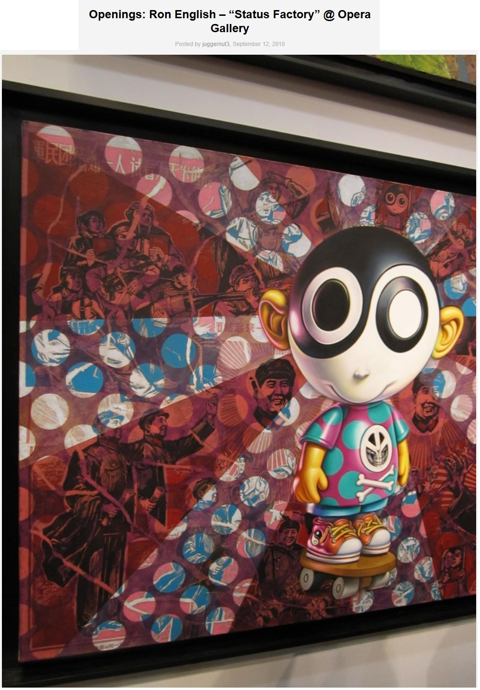
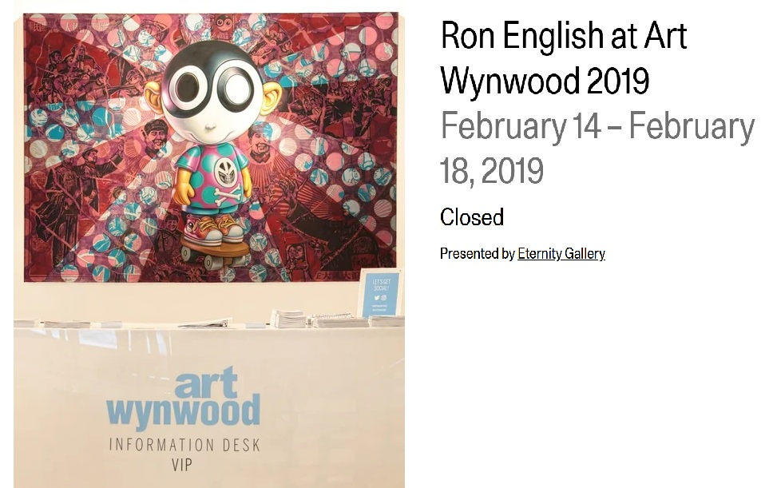
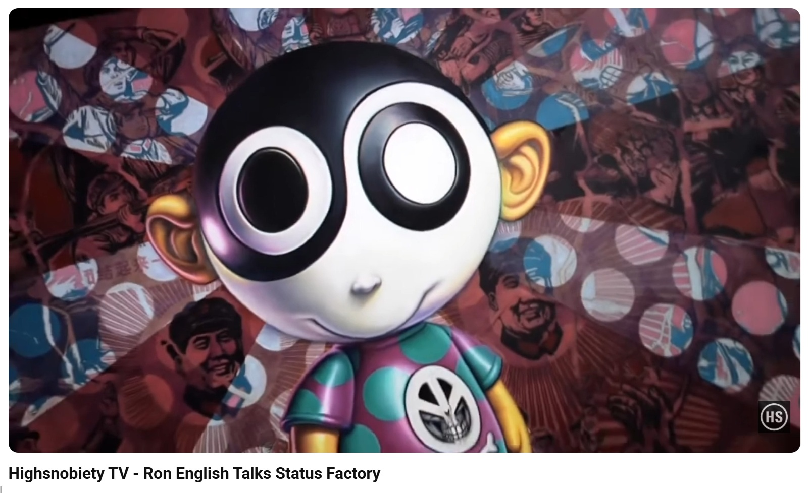
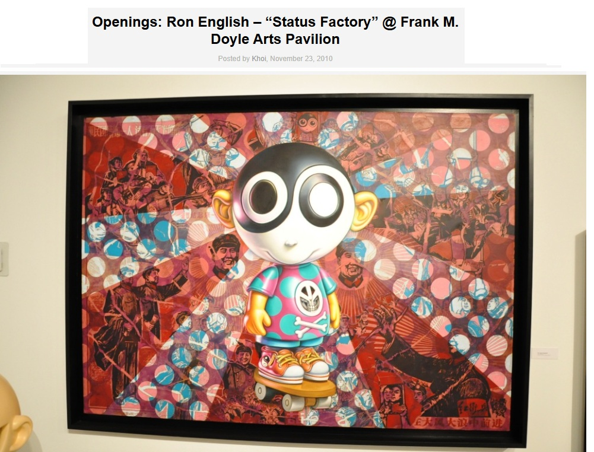
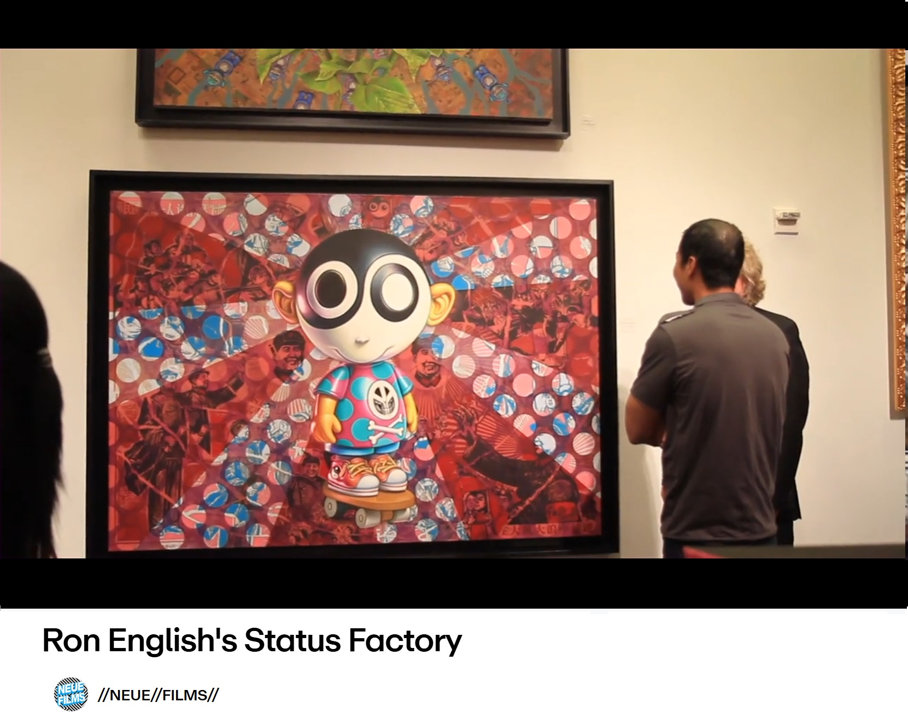

Exhibitions
Status Factory, Opera Gallery, New York, New York, US, September 12–October 29, 2010.
Status Factory – The Art of Ron English, Frank M. Doyle Arts Pavilion (Orange Coast College), Costa Mesa, California, US, November 12–December 17, 2010.
Eternity Gallery, Ron English at Art Wynwood 2019, solo booth presentation at Art Wynwood, Miami, Florida, US, February 14–18, 2019.
Notes
This work appears in Arrested Motion’s opening and exhibition photographs for Ron English’s Status Factory at Opera Gallery.
The work is also documented in Arrested Motion’s opening and exhibition photographs for Status Factory – The Art of Ron English at the Frank M. Doyle Arts Pavilion.
This composition was later reproduced by the artist as a limited-edition print in the Vinyl Chord: A Revolutionary Record Store series.
This work appears in Arrested Motion ’s opening and exhibition photographs for Ron English’s Status Factory at Opera Gallery.
The work is also documented in Arrested Motion ’s opening and exhibition photographs for Status Factory – The Art of Ron English at the Frank M. Doyle Arts Pavilion.
Ancillary Documentation











Selected Online Circulation
Selected examples of the work’s online circulation, reproduction, or discussion. This list is not exhaustive; it is intended to document representative appearances of the image beyond formal exhibition and publication records.
Provenance
Private collection.